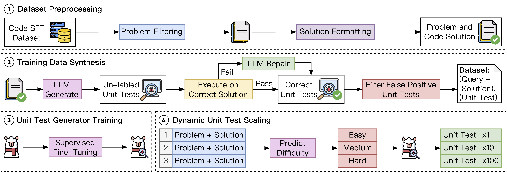
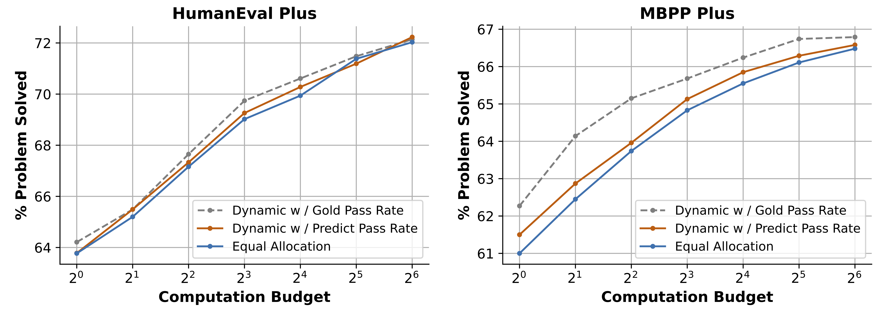

Current large language models (LLMs) often struggle to produce accurate solutions on the first attempt for code generation. Prior research tackles this challenge by generating multiple candidate solutions and validating them with LLM-generated unit tests. The execution results of unit tests serve as reward signals to identify correct solutions. As LLMs always confidently make mistakes, these unit tests are not reliable, thereby diminishing the quality of reward signals. Motivated by the observation that scaling the number of solutions improves LLM performance, we explore the impact of scaling unit tests to enhance reward signal quality. Our pioneer experiment reveals a positive correlation between the number of unit tests and reward signal quality, with greater benefits observed in more challenging problems. Based on these insights, we propose CodeRM-8B, a lightweight yet effective unit test generator that enables efficient and high-quality unit test scaling. Additionally, we implement a dynamic scaling mechanism that adapts the number of unit tests based on problem difficulty, further improving efficiency. Experimental results show that our approach significantly improves performance across various models on three benchmarks (e.g., with gains of 18.43% for Llama3-8B and 3.42% for GPT-4o-mini on HumanEval Plus).
In light of the observations of unit test scaling, we propose CodeRM-8B, a small yet effective unit test generator designed to enable efficient and high-quality unit test scaling. To this end, we introduce a synthetic data pipeline for generating high-quality unit tests and model training.
Additionally, as scaling unit tests proves to be more effective for harder problems, we implement a dynamic scaling strategy that adapts to problems of varying difficulty to further improve efficiency. Specifically, we train a problem difficulty classifier and employ a greedy algorithm to allocate computational resources dynamically, prioritizing harder problems.
Figure 3: Overview for efficient and high-quality unit test scaling. First, we train a lightweight unit test generator based on high-quality synthetic data. Subsequently, we employ dynamic unit test scaling to further improve efficiency.
We conduct extensive experiments to evaluate the effectiveness of CodeRM-8B on three widely used benchmarks (i.e., HumanEval Plus, MBPP Plus and LiveCodeBench) and four LLMs (Llama3-8B, Llama3-70B, GPT-3.5, GPT-4o-mini) with varying parameter scales for solution generation.
The results demonstrate that scaling unit tests with CodeRM-8B significantly improves the performance of smaller models (e.g., a performance gain of 18.43% on HumanEval Plus for Llama3-8B). Moreover, CodeRM-8B enhances the performance of significantly larger models or even proprietary models (e.g., a 4.95% gain for Llama3-70B and 3.42% for GPT-4o-mini on HumanEval Plus).
Table 1: The main result of our approach and other baselines over three code generation benchmarks. GPT-4o-m stands for GPT-4o-mini. The improvements are calculated between methods and vanilla. The top two performances for each dataset and policy model are marked in bold and underlined.
We also evaluate the performance of dynamic unit test scaling on two benchmarks. By leveraging a trained problem difficulty classifier and dynamically allocating computation budgets, this approach brings additional performance improvements at a fixed computational cost.
Figure 4: est-of-N performance comparison under unit test scaling with three computation budget allocation strategies: dynamic allocation with gold pass rate, dynamic allocation with predicted pass rate, and equal allocation.
If you have any questions, we encourage you to either create Github issues or get in touch with us at zeyaoma@gmail.com.